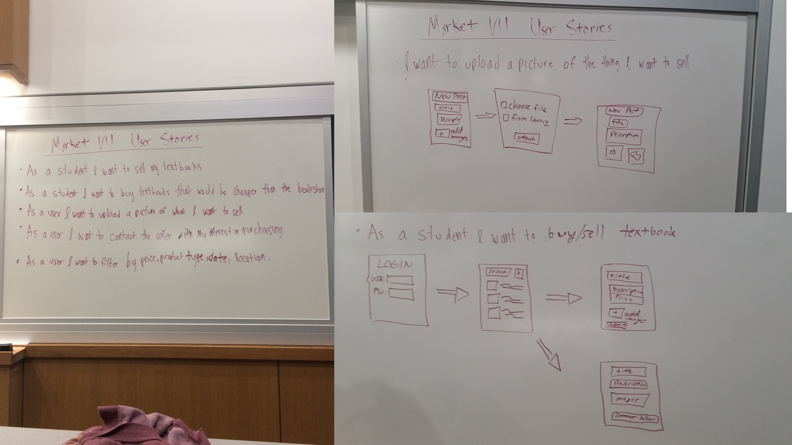
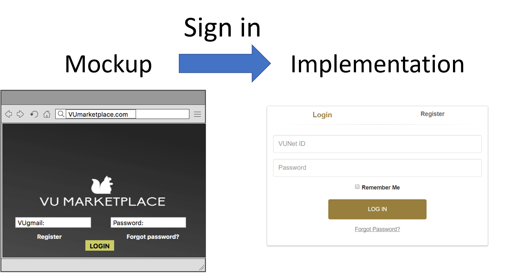
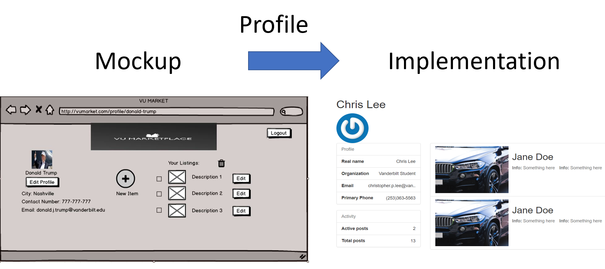
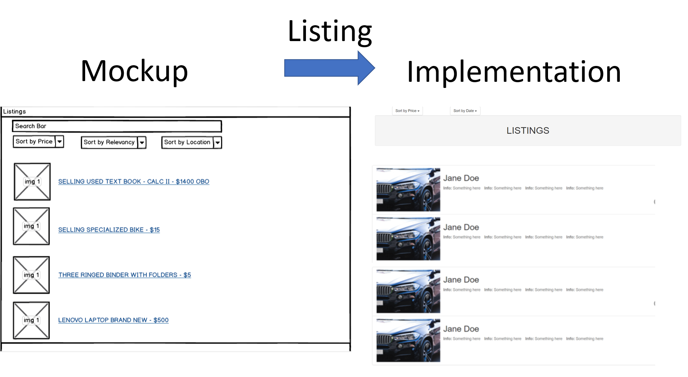

Introduction
Selling and buying items online has always been difficult, more specifically for the Vanderbilt community. From untrustworthy sellers on Craigslist to unmonitored Facebook groups, there has never been a safe, all-encompassing platform where the Vanderbilt community can buy and sell useful services or items. The VU Marketplace is shaped after the wildly successful Chicago University Marketplace. The VU Marketplace seeks to remedy this issue as the go-to forum for commerce within the Vanderbilt University community. This was our software capstone project. We worked in conjunction with the business students to define and create a software product. The business students handled documentation and communication with the different parties (i.e administrative staff to implement this at VU). I worked mostly as the back-end software developer and managing the database.
Process
We started the project by creating user stories to help identify our goals for the project.
 User stories
As the project scopes and goals became better defined through user stories and resarch, we began to create mockups and designs for the user interfaces. We broke the work into springs lasting two weeks a piece for the whole semester. At the end of each of the two weeks we presented our sprint updates to the class. I summarized some of our mockups to implementation below.
Each of our pages bore the VUM header. Unfortuantely due to our database being taken down after graduation I was unable to launch our application and take screen shots of everything in action.
Header on the top of each page  Sign in piece centered on our home page from mockup-to=implementation  Profile from mockup-to-implementation  Listings from mockup-to-implementation
Conclusion and Next Steps
We created a promotional video of our final product in action and our use case. However, due to the wind being a little loud the audio dampening makes it difficult to hear during some portions of the clip.
The end goal of our project was to implement it into the Vanderbilt Community. Unfortunately, there were numerous hoops we had to jump through when working with the administrative teams to ensure that our account information was secure, that our project was funded, everthing was working properly, etc. Therefore, we were unable to finally implement our project into the Vanderbilt Community. We hope to pass off the software to future classes of students to take-on and further our work with our guidance.
We laid the foundation for a potential Vanderbilt Marketplace with full functionality in:
- backend and data base
- secure-login through Vanderbilt Single Sign-on
- working user interface
Among the many things we learned, we learned that we tried to bite too much of the apple off at once. We kept running behind schedule, and there were little bugs that would keep us from movign forward. In the future, we will be more aware of timelines and give more time to work out small kinks. Furthermore, we were ambitious enough to try to make the application multi-platform and started an iOS version, but we soon learned that the work ahead of us was too much and dropped the iOS piece of the project.
Technical specs
- REST API
- JavaScript, NodeJs, Express
- MongoDB, Amazaon Web Services
- HTML/CSS
- PUG templates